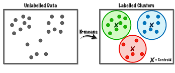
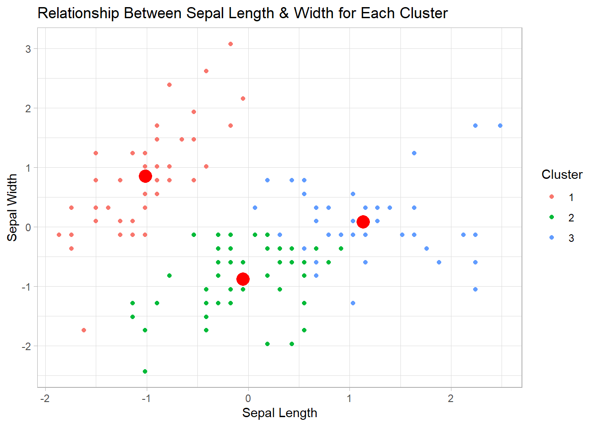

R
library(tidyverse)R
library(tidyverse)RFM analysis, which stands for Recency, Frequency, and Monetary value, is a marketing technique used to evaluate customer behavior and segment customers based on their purchasing habits
This metric measures the time elapsed since a customer’s last purchase such as number of days. A shorter duration indicates that the customer has recently engaged with the business.
Understanding recency helps businesses identify active customers versus those who may be lapsing or at risk of churning. For example, if a customer made a purchase last week, they are more likely to respond to a marketing campaign than someone who hasn’t purchased in over six months.
Frequency measures how often a customer makes purchases within a specific time frame. A higher frequency indicates that a customer regularly engages with the brand.
High-frequency customers are typically more valuable as they demonstrate consistent buying behavior. By analyzing frequency, businesses can identify their most loyal customers and develop targeted retention strategies or reward programs to encourage continued patronage.
Monetary value assesses how much money a customer spends during their transactions over a given period. This metric helps determine the overall profitability of each customer.
Understanding monetary value allows businesses to identify high-value customers who contribute significantly to revenue. Companies can focus on nurturing these relationships through personalized offers or exclusive promotions that cater specifically to their spending habits.
A quantile is a statistical measure that divides a dataset into equal-sized intervals or portions, also known as quartiles, They help describe the distribution of data and are useful for understanding where specific data points fall within that distribution.
Specifically, the p-th quantile is the value below which p% of the data falls.
The first quartile, denoted as Q1 or 25th quantile, is the value below which 25% of the data points within a variable fall. In other words, it marks the 25th percentile of the dataset (and 75% lie above it.). It shows the lower boundary of the first quarter of data, helping to identify the bottom portion of the dataset.
Example: In a class of 100 students, the 25th quantile score on a test would be the score that 25 students scored below.
R
# Lets Create a vector of random students scores
set.seed(1212)
student_test_score <- sample(x = 75:98, size = 100, replace = TRUE)
sort(student_test_score) [1] 75 75 75 75 76 76 76 76 76 76 77 77 77 77 77 78 78 78 78 79 79 80 80 80 80
[26] 80 80 81 81 81 81 81 81 82 82 82 83 83 83 83 83 83 84 84 84 84 85 85 86 86
[51] 87 87 87 87 87 87 88 88 88 88 89 90 90 90 90 90 90 91 91 91 91 91 92 92 92
[76] 92 92 93 93 93 94 94 95 95 95 95 95 96 96 96 96 96 96 97 97 97 97 98 98 98R
quantile(x = student_test_score, probs = 0.25, names = TRUE)quantile() function
25%
80 | First Quantile Test Scores | ||
|---|---|---|
| 25% of datapoint | ||
| Student Id | Student Test Score | Quantile |
| 14 | 75 | Q1 (<= 80) |
| 35 | 75 | Q1 (<= 80) |
| 6 | 75 | Q1 (<= 80) |
| 100 | 75 | Q1 (<= 80) |
| 18 | 76 | Q1 (<= 80) |
| 2 | 76 | Q1 (<= 80) |
| 70 | 76 | Q1 (<= 80) |
| 40 | 76 | Q1 (<= 80) |
| 99 | 76 | Q1 (<= 80) |
| 90 | 76 | Q1 (<= 80) |
| 62 | 77 | Q1 (<= 80) |
| 51 | 77 | Q1 (<= 80) |
| 71 | 77 | Q1 (<= 80) |
| 9 | 77 | Q1 (<= 80) |
| 76 | 77 | Q1 (<= 80) |
| 29 | 78 | Q1 (<= 80) |
| 88 | 78 | Q1 (<= 80) |
| 22 | 78 | Q1 (<= 80) |
| 3 | 78 | Q1 (<= 80) |
| 53 | 79 | Q1 (<= 80) |
| 38 | 79 | Q1 (<= 80) |
| 49 | 80 | Q1 (<= 80) |
| 10 | 80 | Q1 (<= 80) |
| 85 | 80 | Q1 (<= 80) |
| 78 | 80 | Q1 (<= 80) |
| 72 | 80 | Q1 (<= 80) |
| 46 | 80 | Q1 (<= 80) |
| 96 | 81 | Above 25th |
| 98 | 81 | Above 25th |
| 47 | 81 | Above 25th |
| 91 | 81 | Above 25th |
| 65 | 81 | Above 25th |
| 19 | 81 | Above 25th |
| 21 | 82 | Above 25th |
| 12 | 82 | Above 25th |
| 36 | 82 | Above 25th |
| 93 | 83 | Above 25th |
| 84 | 83 | Above 25th |
| 30 | 83 | Above 25th |
| 7 | 83 | Above 25th |
| 55 | 83 | Above 25th |
| 16 | 83 | Above 25th |
| 92 | 84 | Above 25th |
| 8 | 84 | Above 25th |
| 82 | 84 | Above 25th |
| 77 | 84 | Above 25th |
| 28 | 85 | Above 25th |
| 89 | 85 | Above 25th |
| 4 | 86 | Above 25th |
| 48 | 86 | Above 25th |
| 54 | 87 | Above 25th |
| 58 | 87 | Above 25th |
| 11 | 87 | Above 25th |
| 66 | 87 | Above 25th |
| 31 | 87 | Above 25th |
| 81 | 87 | Above 25th |
| 59 | 88 | Above 25th |
| 25 | 88 | Above 25th |
| 27 | 88 | Above 25th |
| 23 | 88 | Above 25th |
| 83 | 89 | Above 25th |
| 60 | 90 | Above 25th |
| 37 | 90 | Above 25th |
| 63 | 90 | Above 25th |
| 86 | 90 | Above 25th |
| 13 | 90 | Above 25th |
| 34 | 90 | Above 25th |
| 94 | 91 | Above 25th |
| 64 | 91 | Above 25th |
| 42 | 91 | Above 25th |
| 75 | 91 | Above 25th |
| 67 | 91 | Above 25th |
| 69 | 92 | Above 25th |
| 39 | 92 | Above 25th |
| 1 | 92 | Above 25th |
| 20 | 92 | Above 25th |
| 56 | 92 | Above 25th |
| 61 | 93 | Above 25th |
| 68 | 93 | Above 25th |
| 26 | 93 | Above 25th |
| 24 | 94 | Above 25th |
| 17 | 94 | Above 25th |
| 57 | 95 | Above 25th |
| 73 | 95 | Above 25th |
| 43 | 95 | Above 25th |
| 50 | 95 | Above 25th |
| 80 | 95 | Above 25th |
| 74 | 96 | Above 25th |
| 15 | 96 | Above 25th |
| 52 | 96 | Above 25th |
| 44 | 96 | Above 25th |
| 5 | 96 | Above 25th |
| 32 | 96 | Above 25th |
| 33 | 97 | Above 25th |
| 97 | 97 | Above 25th |
| 41 | 97 | Above 25th |
| 45 | 97 | Above 25th |
| 95 | 98 | Above 25th |
| 79 | 98 | Above 25th |
| 87 | 98 | Above 25th |
The second quartile is equivalent to the median (Q2). It is the value that divides the dataset into two equal halves, with 50% of the data points below it and 50% above it.
Example: In the same class, the 50th quantile (median) score would be the middle score when all scores are arranged in order.
R
# The quantile function
quantile(x = student_test_score, probs = 0.50, names = TRUE)quantile() function
50%
86.5 OR
R
# The median function
median(student_test_score)[1] 86.5The median is a measure of central tendency, giving an idea of where the middle value of the data is.
| Second Quantile Test Scores | ||
|---|---|---|
| Median Score | ||
| Student Id | Student Test Score | Quantile |
| 14 | 75 | Below 50th |
| 35 | 75 | Below 50th |
| 6 | 75 | Below 50th |
| 100 | 75 | Below 50th |
| 18 | 76 | Below 50th |
| 2 | 76 | Below 50th |
| 70 | 76 | Below 50th |
| 40 | 76 | Below 50th |
| 99 | 76 | Below 50th |
| 90 | 76 | Below 50th |
| 62 | 77 | Below 50th |
| 51 | 77 | Below 50th |
| 71 | 77 | Below 50th |
| 9 | 77 | Below 50th |
| 76 | 77 | Below 50th |
| 29 | 78 | Below 50th |
| 88 | 78 | Below 50th |
| 22 | 78 | Below 50th |
| 3 | 78 | Below 50th |
| 53 | 79 | Below 50th |
| 38 | 79 | Below 50th |
| 49 | 80 | Below 50th |
| 10 | 80 | Below 50th |
| 85 | 80 | Below 50th |
| 78 | 80 | Below 50th |
| 72 | 80 | Below 50th |
| 46 | 80 | Below 50th |
| 96 | 81 | Below 50th |
| 98 | 81 | Below 50th |
| 47 | 81 | Below 50th |
| 91 | 81 | Below 50th |
| 65 | 81 | Below 50th |
| 19 | 81 | Below 50th |
| 21 | 82 | Below 50th |
| 12 | 82 | Below 50th |
| 36 | 82 | Below 50th |
| 93 | 83 | Below 50th |
| 84 | 83 | Below 50th |
| 30 | 83 | Below 50th |
| 7 | 83 | Below 50th |
| 55 | 83 | Below 50th |
| 16 | 83 | Below 50th |
| 92 | 84 | Below 50th |
| 8 | 84 | Below 50th |
| 82 | 84 | Below 50th |
| 77 | 84 | Below 50th |
| 28 | 85 | Below 50th |
| 89 | 85 | Below 50th |
| 4 | 86 | Q2 (~ 86.5) |
| 48 | 86 | Q2 (~ 86.5) |
| 54 | 87 | Q2 (~ 86.5) |
| 58 | 87 | Q2 (~ 86.5) |
| 11 | 87 | Q2 (~ 86.5) |
| 66 | 87 | Q2 (~ 86.5) |
| 31 | 87 | Q2 (~ 86.5) |
| 81 | 87 | Q2 (~ 86.5) |
| 59 | 88 | Above 50th |
| 25 | 88 | Above 50th |
| 27 | 88 | Above 50th |
| 23 | 88 | Above 50th |
| 83 | 89 | Above 50th |
| 60 | 90 | Above 50th |
| 37 | 90 | Above 50th |
| 63 | 90 | Above 50th |
| 86 | 90 | Above 50th |
| 13 | 90 | Above 50th |
| 34 | 90 | Above 50th |
| 94 | 91 | Above 50th |
| 64 | 91 | Above 50th |
| 42 | 91 | Above 50th |
| 75 | 91 | Above 50th |
| 67 | 91 | Above 50th |
| 69 | 92 | Above 50th |
| 39 | 92 | Above 50th |
| 1 | 92 | Above 50th |
| 20 | 92 | Above 50th |
| 56 | 92 | Above 50th |
| 61 | 93 | Above 50th |
| 68 | 93 | Above 50th |
| 26 | 93 | Above 50th |
| 24 | 94 | Above 50th |
| 17 | 94 | Above 50th |
| 57 | 95 | Above 50th |
| 73 | 95 | Above 50th |
| 43 | 95 | Above 50th |
| 50 | 95 | Above 50th |
| 80 | 95 | Above 50th |
| 74 | 96 | Above 50th |
| 15 | 96 | Above 50th |
| 52 | 96 | Above 50th |
| 44 | 96 | Above 50th |
| 5 | 96 | Above 50th |
| 32 | 96 | Above 50th |
| 33 | 97 | Above 50th |
| 97 | 97 | Above 50th |
| 41 | 97 | Above 50th |
| 45 | 97 | Above 50th |
| 95 | 98 | Above 50th |
| 79 | 98 | Above 50th |
| 87 | 98 | Above 50th |
Since there are 100 student scores (an even number), you will need to find the two middle positions 50 & 51 (e.i 86 and 87). So the Median = (86 + 87 / 2) = 86.5
The third quartile, denoted as Q3 or 75th quantile, is the value below which 75% of the data points fall, marking the 75th percentile.
Example: Continuing with the class example, the 75th quantile score would be the score that 75 students scored at or below.
R
quantile(x = student_test_score, probs = 0.75, names = TRUE)quantile() function.
75%
92 | Third Quantile Test Scores | ||
|---|---|---|
| 75% of datapoint | ||
| Student Id | Student Test Score | Quantile |
| 14 | 75 | Q3 (<= 92) |
| 35 | 75 | Q3 (<= 92) |
| 6 | 75 | Q3 (<= 92) |
| 100 | 75 | Q3 (<= 92) |
| 18 | 76 | Q3 (<= 92) |
| 2 | 76 | Q3 (<= 92) |
| 70 | 76 | Q3 (<= 92) |
| 40 | 76 | Q3 (<= 92) |
| 99 | 76 | Q3 (<= 92) |
| 90 | 76 | Q3 (<= 92) |
| 62 | 77 | Q3 (<= 92) |
| 51 | 77 | Q3 (<= 92) |
| 71 | 77 | Q3 (<= 92) |
| 9 | 77 | Q3 (<= 92) |
| 76 | 77 | Q3 (<= 92) |
| 29 | 78 | Q3 (<= 92) |
| 88 | 78 | Q3 (<= 92) |
| 22 | 78 | Q3 (<= 92) |
| 3 | 78 | Q3 (<= 92) |
| 53 | 79 | Q3 (<= 92) |
| 38 | 79 | Q3 (<= 92) |
| 49 | 80 | Q3 (<= 92) |
| 10 | 80 | Q3 (<= 92) |
| 85 | 80 | Q3 (<= 92) |
| 78 | 80 | Q3 (<= 92) |
| 72 | 80 | Q3 (<= 92) |
| 46 | 80 | Q3 (<= 92) |
| 96 | 81 | Q3 (<= 92) |
| 98 | 81 | Q3 (<= 92) |
| 47 | 81 | Q3 (<= 92) |
| 91 | 81 | Q3 (<= 92) |
| 65 | 81 | Q3 (<= 92) |
| 19 | 81 | Q3 (<= 92) |
| 21 | 82 | Q3 (<= 92) |
| 12 | 82 | Q3 (<= 92) |
| 36 | 82 | Q3 (<= 92) |
| 93 | 83 | Q3 (<= 92) |
| 84 | 83 | Q3 (<= 92) |
| 30 | 83 | Q3 (<= 92) |
| 7 | 83 | Q3 (<= 92) |
| 55 | 83 | Q3 (<= 92) |
| 16 | 83 | Q3 (<= 92) |
| 92 | 84 | Q3 (<= 92) |
| 8 | 84 | Q3 (<= 92) |
| 82 | 84 | Q3 (<= 92) |
| 77 | 84 | Q3 (<= 92) |
| 28 | 85 | Q3 (<= 92) |
| 89 | 85 | Q3 (<= 92) |
| 4 | 86 | Q3 (<= 92) |
| 48 | 86 | Q3 (<= 92) |
| 54 | 87 | Q3 (<= 92) |
| 58 | 87 | Q3 (<= 92) |
| 11 | 87 | Q3 (<= 92) |
| 66 | 87 | Q3 (<= 92) |
| 31 | 87 | Q3 (<= 92) |
| 81 | 87 | Q3 (<= 92) |
| 59 | 88 | Q3 (<= 92) |
| 25 | 88 | Q3 (<= 92) |
| 27 | 88 | Q3 (<= 92) |
| 23 | 88 | Q3 (<= 92) |
| 83 | 89 | Q3 (<= 92) |
| 60 | 90 | Q3 (<= 92) |
| 37 | 90 | Q3 (<= 92) |
| 63 | 90 | Q3 (<= 92) |
| 86 | 90 | Q3 (<= 92) |
| 13 | 90 | Q3 (<= 92) |
| 34 | 90 | Q3 (<= 92) |
| 94 | 91 | Q3 (<= 92) |
| 64 | 91 | Q3 (<= 92) |
| 42 | 91 | Q3 (<= 92) |
| 75 | 91 | Q3 (<= 92) |
| 67 | 91 | Q3 (<= 92) |
| 69 | 92 | Q3 (<= 92) |
| 39 | 92 | Q3 (<= 92) |
| 1 | 92 | Q3 (<= 92) |
| 20 | 92 | Q3 (<= 92) |
| 56 | 92 | Q3 (<= 92) |
| 61 | 93 | Above 75th |
| 68 | 93 | Above 75th |
| 26 | 93 | Above 75th |
| 24 | 94 | Above 75th |
| 17 | 94 | Above 75th |
| 57 | 95 | Above 75th |
| 73 | 95 | Above 75th |
| 43 | 95 | Above 75th |
| 50 | 95 | Above 75th |
| 80 | 95 | Above 75th |
| 74 | 96 | Above 75th |
| 15 | 96 | Above 75th |
| 52 | 96 | Above 75th |
| 44 | 96 | Above 75th |
| 5 | 96 | Above 75th |
| 32 | 96 | Above 75th |
| 33 | 97 | Above 75th |
| 97 | 97 | Above 75th |
| 41 | 97 | Above 75th |
| 45 | 97 | Above 75th |
| 95 | 98 | Above 75th |
| 79 | 98 | Above 75th |
| 87 | 98 | Above 75th |
| Quartile | Quantile Value | Percentile | Description |
|---|---|---|---|
| Q1 | 0.25 | 25th | Marks the point where 25% of data falls below |
| Q2 | 0.50 | 50th | Represents the median where half of data lies below |
| Q3 | 0.75 | 75th | Indicates where 75% of data falls below |
R
## All calculation
quantile(student_test_score, probs = c(0.25, 0.5, 0.75)) 25% 50% 75%
80.0 86.5 92.0 These quantiles provide valuable insights into how data is distributed and can help identify trends or outliers and potential skewness within datasets.
The cut() function is a tool used to convert continuous numerical data into categorical data by dividing the range of the data into intervals or “bins.”
R
test_scores <- c(55, 83, 69, 92, 48, 76, 88, 95, 60)
# Categorize test scores into bins
cut(
x = test_scores,
breaks = c(0, 60, 80, 100),
labels = c("Low", "Moderate", "High"),
include.lowest = TRUE
)[1] Low High Moderate High Low Moderate High High
[9] Low
Levels: Low Moderate Hightest_scores| test_scores | category | bins |
|---|---|---|
| 48 | Low | [0,60] |
| 55 | Low | [0,60] |
| 60 | Low | [0,60] |
| 69 | Medium | (60,80] |
| 76 | Medium | (60,80] |
| 83 | High | (80,100] |
| 88 | High | (80,100] |
| 92 | High | (80,100] |
| 95 | High | (80,100] |
The quantile-based approach offers a great binning methods when dealing with uneven data distributions. Quantiles divide the data so that each bin contains approximately the same number of observations e.g., quartiles ensure 25% of data points fall into each bin which prevents the issue of having some bins with very few or no data points. Also, When data is skewed like customer Recency and monetary values, quantiles ensure a more even distribution of observations across bins, improving the usability of segmentation. Finally, Quantile-based binning is data-driven, automatically dividing the data without requiring domain-specific decisions.
For Example:
R
r_qtl <- rfm_df |>
summarise(
Q_25 = quantile(recency, 0.25, names = FALSE),
Q_50 = quantile(recency, 0.50, names = FALSE),
Q_75 = quantile(recency, 0.75, names = FALSE)
) |>
as.list()
r_qtl$Q_25
[1] 45
$Q_50
[1] 106
$Q_75
[1] 210.5Working with a specific set of score threshold e.i 1 to 4, where 1 is considered the worst score and 4 is considered the best score:
R
rfm_df |>
mutate(
r_score = case_when(
recency <= r_qtl$Q_25 ~ 4,
recency <= r_qtl$Q_50 ~ 3,
recency <= r_qtl$Q_75 ~ 2,
.default = 1
)
)r_score to store the Recency scores.
| Customer Recency Score | |||
|---|---|---|---|
| 4: Best, 1: Worst | |||
| customer_id | recency | value_section | r_score |
| 1 | 1 days | Q1 (<=17.75) minimum | 4 |
| 2 | 1 days | Q1 (<=17.75) minimum | 4 |
| 3 | 1 days | Q1 (<=17.75) minimum | 4 |
| 4 | 1 days | Q1 (<=17.75) minimum | 4 |
| 5 | 2 days | Q1 (<=17.75) | 4 |
| 6 | 3 days | Q1 (<=17.75) | 4 |
| 7 | 3 days | Q1 (<=17.75) | 4 |
| 8 | 3 days | Q1 (<=17.75) | 4 |
| 9 | 7 days | Q1 (<=17.75) | 4 |
| 10 | 8 days | Q1 (<=17.75) | 4 |
| 11 | 9 days | Q1 (<=17.75) | 4 |
| 12 | 9 days | Q1 (<=17.75) | 4 |
| 13 | 9 days | Q1 (<=17.75) | 4 |
| 14 | 9 days | Q1 (<=17.75) | 4 |
| 15 | 9 days | Q1 (<=17.75) | 4 |
| 16 | 10 days | Q1 (<=17.75) | 4 |
| 17 | 10 days | Q1 (<=17.75) | 4 |
| 18 | 11 days | Q1 (<=17.75) | 4 |
| 19 | 12 days | Q1 (<=17.75) | 4 |
| 20 | 14 days | Q1 (<=17.75) | 4 |
| 21 | 15 days | Q1 (<=17.75) | 4 |
| 22 | 16 days | Q1 (<=17.75) | 4 |
| 23 | 16 days | Q1 (<=17.75) | 4 |
| 24 | 16 days | Q1 (<=17.75) | 4 |
| 25 | 17 days | Q1 (<=17.75) | 4 |
| 26 | 18 days | Q2 (<=33.5) | 3 |
| 27 | 18 days | Q2 (<=33.5) | 3 |
| 28 | 18 days | Q2 (<=33.5) | 3 |
| 29 | 19 days | Q2 (<=33.5) | 3 |
| 30 | 20 days | Q2 (<=33.5) | 3 |
| 31 | 22 days | Q2 (<=33.5) | 3 |
| 32 | 22 days | Q2 (<=33.5) | 3 |
| 33 | 22 days | Q2 (<=33.5) | 3 |
| 34 | 23 days | Q2 (<=33.5) | 3 |
| 35 | 23 days | Q2 (<=33.5) | 3 |
| 36 | 24 days | Q2 (<=33.5) | 3 |
| 37 | 24 days | Q2 (<=33.5) | 3 |
| 38 | 25 days | Q2 (<=33.5) | 3 |
| 39 | 25 days | Q2 (<=33.5) | 3 |
| 40 | 25 days | Q2 (<=33.5) | 3 |
| 41 | 25 days | Q2 (<=33.5) | 3 |
| 42 | 27 days | Q2 (<=33.5) | 3 |
| 43 | 27 days | Q2 (<=33.5) | 3 |
| 44 | 28 days | Q2 (<=33.5) | 3 |
| 45 | 30 days | Q2 (<=33.5) | 3 |
| 46 | 31 days | Q2 (<=33.5) | 3 |
| 47 | 32 days | Q2 (<=33.5) | 3 |
| 48 | 32 days | Q2 (<=33.5) | 3 |
| 49 | 33 days | Q2 (<=33.5) | 3 |
| 50 | 33 days | Q2 (<=33.5) | 3 |
| 51 | 34 days | Q3 (<=94.25) | 2 |
| 52 | 34 days | Q3 (<=94.25) | 2 |
| 53 | 34 days | Q3 (<=94.25) | 2 |
| 54 | 35 days | Q3 (<=94.25) | 2 |
| 55 | 35 days | Q3 (<=94.25) | 2 |
| 56 | 35 days | Q3 (<=94.25) | 2 |
| 57 | 37 days | Q3 (<=94.25) | 2 |
| 58 | 37 days | Q3 (<=94.25) | 2 |
| 59 | 38 days | Q3 (<=94.25) | 2 |
| 60 | 40 days | Q3 (<=94.25) | 2 |
| 61 | 42 days | Q3 (<=94.25) | 2 |
| 62 | 44 days | Q3 (<=94.25) | 2 |
| 63 | 45 days | Q3 (<=94.25) | 2 |
| 64 | 47 days | Q3 (<=94.25) | 2 |
| 65 | 64 days | Q3 (<=94.25) | 2 |
| 66 | 66 days | Q3 (<=94.25) | 2 |
| 67 | 69 days | Q3 (<=94.25) | 2 |
| 68 | 71 days | Q3 (<=94.25) | 2 |
| 69 | 72 days | Q3 (<=94.25) | 2 |
| 70 | 76 days | Q3 (<=94.25) | 2 |
| 71 | 80 days | Q3 (<=94.25) | 2 |
| 72 | 82 days | Q3 (<=94.25) | 2 |
| 73 | 86 days | Q3 (<=94.25) | 2 |
| 74 | 87 days | Q3 (<=94.25) | 2 |
| 75 | 93 days | Q3 (<=94.25) | 2 |
| 76 | 98 days | Above Q3 (> 94.25) | 1 |
| 77 | 102 days | Above Q3 (> 94.25) | 1 |
| 78 | 106 days | Above Q3 (> 94.25) | 1 |
| 79 | 110 days | Above Q3 (> 94.25) | 1 |
| 80 | 111 days | Above Q3 (> 94.25) | 1 |
| 81 | 112 days | Above Q3 (> 94.25) | 1 |
| 82 | 115 days | Above Q3 (> 94.25) | 1 |
| 83 | 124 days | Above Q3 (> 94.25) | 1 |
| 84 | 132 days | Above Q3 (> 94.25) | 1 |
| 85 | 138 days | Above Q3 (> 94.25) | 1 |
| 86 | 148 days | Above Q3 (> 94.25) | 1 |
| 87 | 149 days | Above Q3 (> 94.25) | 1 |
| 88 | 151 days | Above Q3 (> 94.25) | 1 |
| 89 | 152 days | Above Q3 (> 94.25) | 1 |
| 90 | 161 days | Above Q3 (> 94.25) | 1 |
| 91 | 163 days | Above Q3 (> 94.25) | 1 |
| 92 | 164 days | Above Q3 (> 94.25) | 1 |
| 93 | 169 days | Above Q3 (> 94.25) | 1 |
| 94 | 175 days | Above Q3 (> 94.25) | 1 |
| 95 | 177 days | Above Q3 (> 94.25) | 1 |
| 96 | 182 days | Above Q3 (> 94.25) | 1 |
| 97 | 183 days | Above Q3 (> 94.25) | 1 |
| 98 | 184 days | Above Q3 (> 94.25) | 1 |
| 99 | 193 days | Above Q3 (> 94.25) | 1 |
| 100 | 195 days | Above Q3 (> 94.25) maximum | 1 |
This method divides the range of values into intervals of equal size (width), in other words, each bin has the same difference between the minimum and maximum value.
Example:
R
r_range <- range(rfm_df$recency, na.rm = TRUE)
r_bin_width <- (r_range[2] - r_range[1]) / 4
rfm_df |>
mutate(
r_score = cut(
x = recency,
breaks = seq(r_range[1], r_range[2], by = r_bin_width),
include.lowest = TRUE,
labels = c(4, 3, 2, 1)
)
)r_score to store the Recency scores.
The equal interval binning method can be very helpful when the data is uniformly distributed or when you need evenly spaced bins for comparison.
This method divides the data into a specified number of bins, with approximately equal-sized groups based on the range of values. It is similar to equal interval binning, but the intervals are determined automatically.
Example:
R
rfm_df |>
mutate(
r_score = cut(
recency,
breaks = 4,
labels = c(4, 3, 2, 1)
)
)r_score to store the Recency scores.
cut() function which will divide the range into approximately equal-sized intervals.
The fixed number of bins method is suitable when you know how many segments you want but don’t care about specific ranges or thresholds. or you don’t have specific business rules.
In this approach, bins are defined manually based on business logic, domain knowledge, or other meaningful thresholds. Each bin contains values that meet specific, pre-defined conditions.
Example:
R
rfm_df |>
mutate(
r_score = case_when(
recency <= 20 ~ 4,
recency <= 50 ~ 3,
recency <= 80 ~ 2,
.default = 1
)
)r_score to store the Recency scores.
| Method | Strengths | Limitations |
|---|---|---|
| Quantile Binning | Balanced bins, good for skewed data | Bin boundaries can be less intuitive |
| Equal Interval Binning | Simple, intuitive, evenly spaced bins | Skewed data results in empty or uneven bins |
| Fixed Number of Bins | Easy to implement, fast segmentation | Bins may not align with data distribution |
| Custom Ranges Binning | Reflects business logic, highly customizable | Requires domain knowledge and manual setup |
Segmentation: Businesses can segment customers into different groups based on their RFM scores (e.g., high recency, high frequency, high monetary value). This segmentation enables tailored marketing strategies for each group.
Targeted Marketing Campaigns: By understanding which customers are most engaged (high recency), loyal (high frequency), and profitable (high monetary value), companies can create targeted campaigns that resonate with specific segments.
Customer Retention Strategies: Identifying at-risk customers (low recency) allows businesses to implement retention strategies before they churn, such as re-engagement campaigns or special offers.
Resource Allocation: RFM analysis helps allocate marketing resources efficiently by focusing efforts on high-value segments that yield the best return on investment.
Cluster analysis is a statistical technique used for grouping data points into clusters based on their similarity. In other words, the goal of cluster analysis is to partition a dataset into distinct groups where the members of each group are more similar to each other than to those in other groups.
K-means clustering is one of the simplest and most popular unsupervised machine learning algorithms. It partitions the data into K distinct clusters based on feature similarity. The algorithm works as follows: After making sure the dataset is free of any missing value and normalized to ensure each feature contributes equally to the clustering results;

The centers (or centroids) of clusters are critical in K-means clustering as they represent the average position of all points within a cluster in multi-dimensional space.
R
scaled_iris <- select(iris, -Species) |> scale()R
set.seed(123)
kmeans_result <- kmeans(scaled_iris, centers = 3)kmeans() to partition the dataset into three groups.
R
# Check cluster assignments
print(kmeans_result$cluster) [1] 1 1 1 1 1 1 1 1 1 1 1 1 1 1 1 1 1 1 1 1 1 1 1 1 1 1 1 1 1 1 1 1 1 1 1 1 1
[38] 1 1 1 1 1 1 1 1 1 1 1 1 1 3 3 3 2 2 2 3 2 2 2 2 2 2 2 2 3 2 2 2 2 3 2 2 2
[75] 2 3 3 3 2 2 2 2 2 2 2 3 3 2 2 2 2 2 2 2 2 2 2 2 2 2 3 2 3 3 3 3 2 3 3 3 3
[112] 3 3 2 2 3 3 3 3 2 3 2 3 2 3 3 2 3 3 3 3 3 3 2 2 3 3 3 2 3 3 3 2 3 3 3 2 3
[149] 3 2R
# View centroids
print(kmeans_result$centers) Sepal.Length Sepal.Width Petal.Length Petal.Width
1 -1.01119138 0.85041372 -1.3006301 -1.2507035
2 -0.05005221 -0.88042696 0.3465767 0.2805873
3 1.13217737 0.08812645 0.9928284 1.0141287R
scaled_iris <- as_tibble(scaled_iris) |>
mutate(cluster = kmeans_result$cluster)
head(scaled_iris)# A tibble: 6 × 5
Sepal.Length Sepal.Width Petal.Length Petal.Width cluster
<dbl> <dbl> <dbl> <dbl> <int>
1 -0.898 1.02 -1.34 -1.31 1
2 -1.14 -0.132 -1.34 -1.31 1
3 -1.38 0.327 -1.39 -1.31 1
4 -1.50 0.0979 -1.28 -1.31 1
5 -1.02 1.25 -1.34 -1.31 1
6 -0.535 1.93 -1.17 -1.05 1R
scaled_iris |>
ggplot(aes(x = Sepal.Length, y = Sepal.Width, color = factor(cluster))) +
geom_point() +
geom_point(
data = kmeans_result$centers,
aes(x = Sepal.Length, y = Sepal.Width),
size = 5,
color = "red"
) +
labs(
x = "Sepal Length",
y = "Sepal Width",
title = "Relationship Between Sepal Length & Width in Each Cluster",
color = "Cluster"
) +
theme_light()
When performing K-means clustering, keep these key points in mind:
Choosing K: Selecting an appropriate value for K can be challenging; methods such as the Elbow Method or Silhouette Analysis can help determine an optimal number of clusters.
Distance Metric Choice: The choice of distance metric affects clustering results; while Euclidean distance is common, other metrics may be more suitable for specific datasets.
Scalability Issues: K-means may struggle with very large datasets due to its computational complexity.
Assumption of Spherical Clusters: K-means assumes that clusters are spherical and equally sized; it may not perform well with non-globular shapes or varying densities.
Forecasting, particularly in the context of sales forecasting, refers to the process of estimating future sales revenue for a specific time period, such as a month, quarter, or year. It is a systematic approach to predicting how much a company will sell in the future using historical sales data, market trends, economic indicators, and insights from sales teams to generate estimates.
Sales forecasting is important to the overall business strategy, decision making, Budgeting and Resource allocation.
The ARIMA model, which stands for Autoregressive Integrated Moving Average. It combines three key components: autoregression (AR), differencing (I), and moving average (MA). This model is particularly effective in capturing the underlying patterns in time series data.
The order of the autoregressive part is denoted by p, which indicates how many previous values are included in the model. For example ARIMA(p,d,q)
The degree of differencing is denoted by d. involves differencing the raw observations to make the time series stationary, which means that its statistical properties do not change over time. For example ARIMA(p,d,q)
The order of the moving average part is denoted by q. The MA part captures the impact of past forecast errors on current values. For example ARIMA(p,d,q)
Non-seasonal models are denoted ARIMA(p,d,q), while seasonal models include additional parameters and are denoted ARIMA(p,d,q)(P,D,Q)m.
The ARIMA model is typically expressed as ARIMA(p,d,q), where: - p: Number of lag observations included in the model (autoregressive part). - d: Number of times that the raw observations are differenced (integrated part). - q: Size of the moving average window (moving average part).
While the ‘P’, ‘D’, ‘Q’, and ‘m’ in seasonal models correspond to the seasonal components.
To construct an ARIMA model, follow these steps: 1. Data Collection: Gather historical sales time series data relevant to the business for forecasting.
R
# Assuming monthly data
sales_ts <- ts(sales_data$sales, frequency = 12)R
adf_test <- adf.test(sales_ts)
adf_test$p.valueIf the p-value is greater than 0.05, the series is non-stationary, and you need to difference it.
R
sales_diff <- diff(sales_ts)
adf_test_diff <- adf.test(sales_diff)R
acf(sales_diff)
pacf(sales_diff)Other steps includes: 4. Identify Parameters (p,d,q)(P,D,Q): Based on ACF and PACF plots, you can choose appropriate values for p and q. The d value is determined by how many times you differenced the series.
R
model <- auto.arima(sales_ts)
summary(model)Alternatively, specify parameters manually if known
R
model <- arima(
sales_ts,
order = c(1,1,1),
seasonal = list(order = c(1,1,1), frequency = 12)
)
summary(model)R
checkresiduals(model)R
forecasts <- forecast(model, h=12)
plot(forecasts)Root Mean Square Error (RMSE): RMSE is particularly useful when you want to give higher weight to larger errors. This is because RMSE squares the errors before averaging them, which means that larger discrepancies have a disproportionately large effect on the final result.
Mean Absolute Error (MAE): MAE measures the average magnitude of errors in a set of predictions, without considering their direction (i.e., it does not differentiate between overestimation and underestimation).
Mean Absolute Percentage Error (MAPE): MAPE expresses accuracy as a percentage and is useful for understanding how well your model performs relative to actual values.
Mean Error (ME): ME calculates the average error between predicted and actual values but can be misleading due to its potential cancellation effect (positive and negative errors can offset each other).